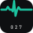

Variantes de logo para el encabezado del correo
Mismo tamaño que en la plantilla (22 px de alto para el wordmark, 46 px de ancho para el
latido). La columna izquierda es la superficie clara del correo; la derecha, la oscura.
Correo en claro
Actual · wordmark con tagline
A 22 px el ancho ronda 90 px: por debajo del mínimo de 120 px que la guía pide para
que la tagline se lea. No recomendado.
A · latido + wordmark sin tagline
Lockup horizontal. Legible a este tamaño y sin repetir el «027» del icono.
B · icono de app + wordmark
El squircle blanco se funde con la tarjeta; se ve sobre todo el electro y el «027»
diminuto. Más peso visual, algo redundante.
C · solo wordmark sin tagline
La opción más limpia y la que menos compite con el nombre de la instancia.
Correo en oscuro
Actual · wordmark con tagline
Mismo problema de tamaño. No recomendado.
A · latido + wordmark sin tagline
El latido pasa al teal brillante del tema oscuro.


B · icono de app + wordmark
El squircle oscuro se funde con la superficie; queda el electro con el «027».
C · solo wordmark sin tagline
La opción más limpia en oscuro.
Para el correo real, cada variante iría como PNG absoluto (Outlook no pinta SVG),
con su versión clara y oscura. El lockup A puede exportarse como una sola imagen o montarse
con dos <img> alineadas; dos imágenes permiten reutilizar los assets que ya
existen sin generar un fichero nuevo por tema.